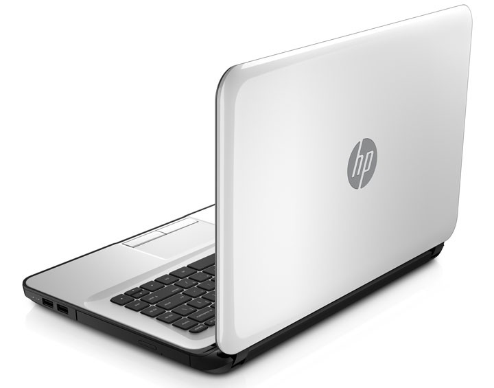
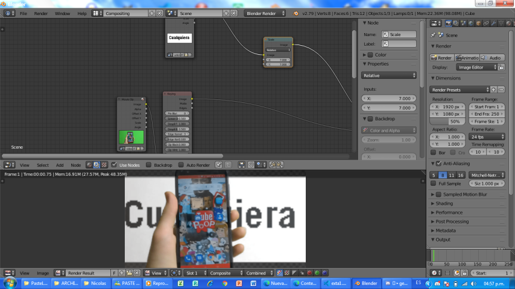

Tal parece que esta es mi pc
Bueno, esto sera un nada interesante recorrido por mi PC y los programas que uso, asi que... Empecemos :D
- Modelo: ni idea
- Sistema Opertivo: Windows 7 (Superultramega optimizado
Y aún así va lento) - Procesador: AMD E1-2100 a 1.00GhZ
, carajo - Memoria RAM:4GB, Pero solo tengo 3,47GB usables
, carajo x2 - Gráfica: La integrada del procesador
Listo, ahora hagamos un recorrido por los programas que uso :)
Para Edicion de Video
He tenido que usar diferentes programas de edición, estos son:
OpenShot
Tiene potencial para ser buen editor, pero es re pesado, te recomiendan 16gb de RAM para editar algunas pequeñas cosillas, mientras que con otros editores lo podrias hacer con 4GB. La unica manera de usar este editor de una forma medianamente bien y sin invertir dienero, serí instalandose un S.O ligero (yo lo hice con Lubuntu y me fue excitantemente bien).
Blender
Seré honesto, solo use Blender para editar un video, y me fue pésimo, supongo que ha de ser un problema de mi PC, ya que he visto gente editando con Blender y les va bien. Fuera de eso, cumple con lo básico de l edicón, solo que al ser un programa diseñado mas al entorno 3D y a los efectos especiales, es medio raro usarlo a veces.

Kdenlive
Este es como Openshot pero mejor, te va MUCHO mas rápido que este, solo que acostrarse es medio extraño, ya que no tiene tantos iconos ni colorcit, sino puro texto, y en ocaciones tienes que hacer cosas MUY diferentes a Openshot, aunque, pocas veces me ha generado problemas.
Adobe Premiere CS6
Bueno, no puedo decir mucho sobre el, ya que des hace muy poco tiempo lo uso, pero hasta donde lo he usado no me ha generado ningun problema, si haz usado algun programa de los anterirores se te hará muy facil acostumbrarte a lo básico.
Para Composición
Si, uso Blender para la compocisón xd, de hecho, no es por parecer un fanboy pobre de Blender, pero Blender hace efectos de compocision muuuucho mejores que varios editores de video concencionales (como Camptasia), el problemas que mi asquerosa pc no soporta las versiones mas nuevas de Blender, asi que me tengo que conformar con Blender 2.79, una version de hace casi 4 AÑOS, y aún así va lento >:|

Para hacer clickbait Thumbails

Krita
Esta especializado mas al dibujo, no tanto a la edición de imagen, pero igual está muy mucho bien. La solía usar para Thumnails (la mayoria de personas le dicen "miniaturas" pero yo lo digo como se me de la gana) que requieran mas que nada dibujo.
 Thumnail hecho en Krita
Thumnail hecho en Krita

Gimp
Es un estupendo programa, es relativamente facil de usar y da buenos resultados, un amimgo y yo lo usamos para editar imagenes, no se que tal le vaya a el, pero por mi parte lo recomiendo bastante.
 Thumnail hecho en Gimp
Thumnail hecho en Gimp
Adobe Photoshop CS6
Bueno, que les puedo decir? es Photoshop el programa mas conocido para la edicion de imagen, es extremadamente bueno.
 Thumnail hecho en Photoshop
Thumnail hecho en Photoshop
Listo, eso es todo, omiti los programas que uso para hacer animación ya que de estos opinaré en una nueva serie de videos, espero que le haya servido o minimamente entretenido, no olviden suscribirse al canal extra de Youtube y unirse al servidor de Discord